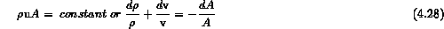
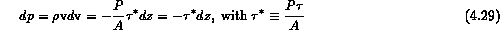
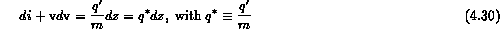
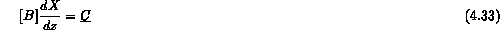
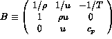
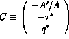
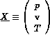

The more general case for critical flow involves consideration of heat addition, friction along the pipe wall and non-equilibrium effects in velocity and temperature. Examples of such models are given in References 20-22. The complete set of steady-state conservation equations can be written as (see Reocreux, Ref. 23).



where is the wall shear stress and q' is the linear heat addition rate, both externally imposed. In addition one also has the equation of state for the fluid

As an example for an ideal gas one can substitute the algebraic expressions for pressure, p, and enthalpy, i, into the balance equations and we write eqns 28-30 in matrix form

with   , and 
Notice that the frictional, heat addition and area change terms appear as external sources in the expression on the right-hand side. Reocreux [23] used this example to indicate that the momentum and heat transfer relations are algebraic and not included in the derivative terms. The solution to this matrix is found by inverting the matrix B. This can only be done if the determinant of B is non-zero. Mathematically, when the determinant is zero this is a condition when the pressure gradient is infinite and we have reached the critical flow condition, and solve for the velocity which it achieves. For the case of an ideal gas we recover the same results as discussed previously (eqns 4.5 to 7).
This suggests the difficulties that arise when two phases occupy the channel. In single phase flow dA/A, and q' were imposed externally upon the fluid. In two phase flow consider how these quantities will be partitioned between the two phases; i.e., how will the flow area be occupied by the two phases and how will the shear forces be distributed among the two phases? This last consideration will determine the void fraction. Also how energy will be distributed between the two phases; a thermal equilibrium consideration? Thus we can sense that mechanical and thermal non-equilibrium considerations will be important in relation to two-phase critical flow.
Giot and Meunier [24] have shown that the Moody and Fauske models outlined above are equivalent to requiring that the determinant of the three mixture conservation equations, augmented by a fourth condition involving a linear combination of the space derivaties of S, p, X, and vanishes. Thus they find again the relationship between critical flows and the vanishing determinant of the conservation equations for single-phase compressible flows.
In non-equilibrium models, one needs a mechanistic description of the mass and energy exchanges between the two phases. For example, one can use the theory of heat transfer limited bubble growth to arrive at a vapor generation law needed to close the system of equations in this case [21, 22]. Many models addressing the various aspects briefly touched upon above have appeared in the literature over the years. There is yet no model that gives perfect agreement with all the data and there will probably be none in the future either. Indeed, certain non-equilibrium aspects, such as nucleation on the walls and flow-pattern dependent velocity ratios depend on secondary variables (such as wall roughness and gas content of the liquid in the case of nucleation) and are difficult or impossible to quantify in general.
Non-equilibrium models can be either empirical, mechanistic (i.e. based on a phenomenological description of the vapor generation mechanisms), or based on two-fluid models incorporating automatically the interfacial heat and mass exchange mechanisms.
In empirical models non-equilibrium vapor generation is handled by introducing, for example, a coefficient that allows only a fraction of the equilibrium vapor generation to occur. Relaxation models for phase change have also been proposed by several authors; in this case the actual vapor generation is proportional to the difference between the actual quality and the equilibrium quality.
Mechanistic models attempt to model the mechanisms of nucleation and interfacial phase change. There are inherent difficulties, however, in all critical flow models that become evident when this approach is used. For example, the rate of nucleation depends on the roughness and other properties of the walls as well as on the amount of dissolved air in the system; such effects are very difficult to quantify, as already mentioned. Introducing a grid in the flow area promoted nucleation and lowered the superheating of the liquid with significant impact on the critical flow characteristics during the Moby-Dick experiments [25]. Often the realism introduced into the model by modeling of the physical phenomena is shadowed by totally unreasonable values of certain parameters that must be used to fit the experimental data.
The six-equation formulation provides automatically the features necessary for describing departures from mechanical and thermal non equilibrium. The methodology that can be used to detect the presence of critical flow conditions when the six equations are being integrated is well understood [20, 24, 26-28]. In a way quite analogous to the one shown previously for single-phase gas flows, one finds that critical flow occurs when the determinant of the coefficients of the solution variables becomes zero at a certain location. Regarding modeling of the physics, however, there are difficulties with this approach also since we do now know yet the correct form of certain terms that enter into the conservation equations and influence the results significantly; the virtual mass terms have such an effect as well as the mass exchange rate [22].
In spite of the fact that the two-fluid 6-equation models are capable of predicting the occurrence of a critical flow condition, for several practical reasons (computational speed, singularity of the solutions near the critical point, not knowing a priori the location of the choking point, fine nodalization requirements, the numerical schemes used, etc.) a separate choking model is necessary.
This separate critical flow criterion is derived from an analysis of the characteristics of the governing; if the real part of all the characteristics is non-negative, no information can propagate upstream, and the exit pressure cannot affect any more the flow upstream from the break. The critical velocity is thus calculated from an algebraic equation obtained by requiring that the largest characteristic velocity be equal to zero. For system calculations, the critical flow condition derived in this fashion is applied at the choking point whose location is known a priori.
The NRC computer codes (RELPA5/MOD2, TRAC/BF1 and TRAC-PFI/MOD1) use a simplified two-phase choking criterion that is based on the assumption of thermal equilibrium between the phases, at variance with the physics reality. The so-called "RELAP5 two-phase choking criterion" (used also in TRAC-BF1) [22] is derived from such a formulation (4-equation, thermal equilibrium) with additional simplifications for obtaining an explicit expression for the characteristic roots; choking occurs when a hybrid mixture velocity becomes equal to the homogeneous equilibrium (HE) sound velocity. In this model, the arbitrary simplifications needed to arrive at the final mixture velocity have no justification other than the fact that they yield good results.
A different approach is used in CATHARE where the critical condition is derived from the basic thermal-hydraulic model. CATHARE [30] uses a full 6-equation model and the critical condition is found by solving a sixth-degree polynomial that retains all the terms (velocity and temperature difference between the phases are both considered). The code has also the capability, however, of integrating the conservation equations all the way through a critical flow condition. One should note, however, that CATHARE uses a fully implicit numerical scheme that allows use of very fine meshes near the break without consequence on the time step.